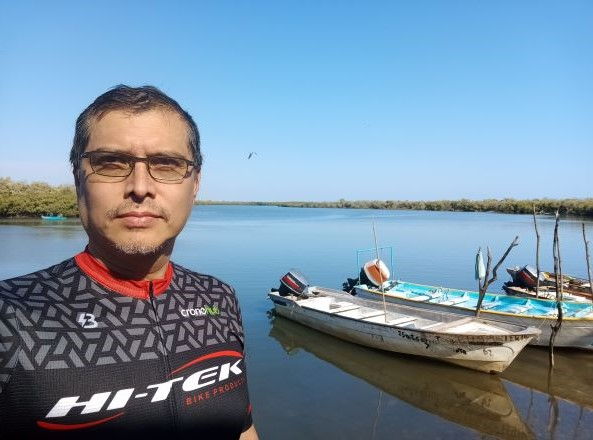

Dr. Iván Pacheco Soto
Profesor Asistente
Tec de Monterrey Campus
Sinaloa
e-mail: ipacheco@tec.mx
Áreas de Interés
Programación R, Aplicaciones Estadísticas en la Industria, Procesos Empíricos, Innovación Educativa.
Formación Académica
Doctorado en Estadística
The University of North Carolina at Chapel Hill
Department of Statistics and Operational Research
Tesis: Cyclical Time Series with Squeezed Time
Asesor: Dr. Gordon Simons
1995-2005
Maestría en Estadística
Universidad de Guanajuato
(Facultad de Matemáticas) y Centro de Investigación en Matemáticas
Tesis: Procesos Empíricos
Asesor: Dr. José María González Barrios
1991-1993
Licenciatura en Física y Matemáticas
Instituto Politécnico Nacional
Escuela Superior de Física y Matemáticas
Tesis: Representación de LePage de una variable aleatoria estable
Asesor: M. en C. Jorge Gómez Arias
1986-1990
Experiencia Docente
Profesor de planta en el Instituto Tecnológico y de Estudios Superiores de
Monterrey Campus Sinaloa en la División de Profesional.
Junio 2018 - a la fecha
Profesor de planta en el Instituto Tecnológico y de Estudios Superiores de
Monterrey Campus Zacatecas en la División de Profesional.
Enero 2005 - a Mayo 2018
Profesor de cátedra en el Instituto Tecnológico y de Estudios Superiores de
Monterrey Campus Zacatecas en la División de Profesional.
Agosto 2003 - Diciembre 2004
Profesor de cátedra en la Universidad de Autónoma de Zacatecas en la Unidad
Académica de Matemáticas.
Agosto 2003 - Junio 2004
Asistente en el Centro de Investigación en Matemáticas, A.C.,
Guanajuato, Gto.
Agosto 2002 - Diciembre 2002
Asistente y profesor de cátedra en The University of North Carolina at Chapel
Hill, Department of Statistics, Chapel Hill, North Carolina U.S.A.
Agosto 1995 - Mayo 2002
Profesor de tiempo parcial en la Universidad de Matemáticas en la Facultad de
Matemáticas, Guanajuato, Gto.
1991-1994